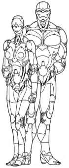
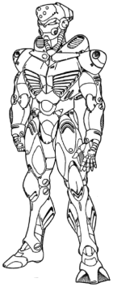
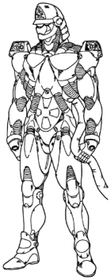
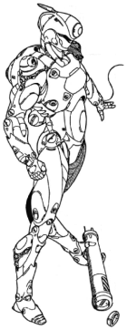
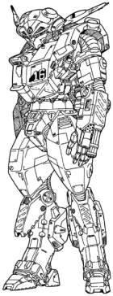
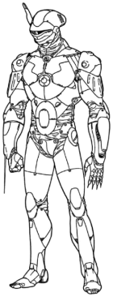
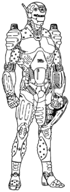
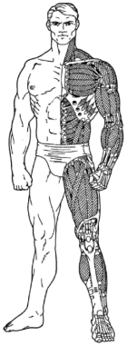
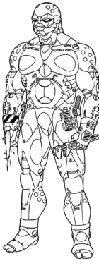
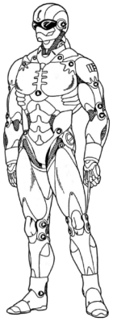

You can find all these informations in English in the supplement Chromebook 2 pages 63 to 85. And for an even more in-depth version, check out the Full Body Conversion page.
Le cyborg est une injure à l'humanité. Dès les débuts 2005, diverses forces militaires menèrent des expérimentations sur les conversions cybernétiques corporelles totales. C'est durant ces expérimentations que la cyberpsychose fut pour la première fois identifiée et diagnostiquée. En 2020, les cyborgs intégraux, tels qu'ils sont appelés familièrement, deviennent de plus en plus populaire. Des ouvriers du bâtiment, des pilotes de chasse, des astronautes et même des pompiers ont opté pour remplacer leur constitution humaine par un corps cybernétique afin d'améliorer leur travail. Le plein potentiel de cette technologie est désormais atteint, mais devenir un cyborg intégral est loin d'être une procédure standard.
Une telle conversion est l'ultime étape de la cybernétique. En échangeant votre squelette contre un exo-squelette interfacé métallique et une musculature en fibre de myomar, incorporant des membres totalement cybernétiques et un revêtement blindé du corps, vous pourrez devenir le cyborg "classique" de science-fiction. Un borg intégral peut lever et jeter une petite voiture, envoyer au tapis un mur de brique armé et traverser sans encombre une zone de tir. Son corps a été effectivement complètement remplacé lui donnant, sinon plus, l'équivalence structurel et l'habilité des cybermembres.
Il est renforcé et blindé avec un corps complet de 25 PS. Son système nerveux cybernétique et ses muscles en fibre synthétique enlacé lui donnent des réflexes incroyables et des mouvements accélérés. Les modèles de combat lourds utilisent également des pistons électro-magnétique, appelés communément hydraulique qui confèrent plus de puissance et de vitesse. Un borg de combat est inébranlable, capable d'encaisser des tirs de mitrailleuse et d'armes anti-tank léger.
La conversion en borg intégral reste une exception technologique (et fréquemment illégale). L'une des raison à cela est que le temps, le coût et la difficulté du procédé en empêche l'essor, plus que la perte intangible de l'humanité de la personne, lui conférant une personnalité mécanique, froide et impitoyable. Physiquement parlant, le personnage devient si "inhumain" qu'il prend des points de dommages structurels plutôt que des dommages physiques.
Il y a un peu d'espoir pour ceux qui tentent une conversion en borg intégral. Car le remplacement complet du corps, qui est réalisé en une seule fois, reste moins traumatisant pour l'individu. Si une même personne, décidait de se faire installer progressivement la totalité d'une conversion, elle souffrerait d'une perte massive d'humanité (normalement dépassant 100 PH). Ceci est dû aux multiples opérations sévères, ayant des répercutions sur le physique et le psychique, séparant progressivement l'âme du patient de son corps. De plus une conversion en borg intégral reste plus, avant toute chose, une procédure de transplantation qu'une opération. Dans un tel cas, le cerveau du patient, une portion de sa glande spinale et quelque organes ne pouvant être reproduit (le tout étant appelé biosystème) sont transplantés dans un corps "robotisé". La plupart des fonctions réalisées par les organes internes (tel le système digestif, les poumons et le coeur) sont remplacées par des analogie cybernétiques. Par exemple, les poumons sont remplacés par un système de filtration et d'oxygénation. C'est pourquoi un borg intégral est immunisé à toutes sortes de gaz. En réalité, un borg intégral a un stock d'air pressurisé d'une capacité de deux jours, lui laissant ainsi le temps d'éliminer l'effet des toxines. Il en va de même pour la nourriture et la boisson, bien que, pour des raisons psychologiques, tous les borgs intégraux soient capables de se nourrir normalement (il reste inévitable que la plupart des borgs intégraux n'auront pas de rapports sexuels ou d'enfants). Toujours pour des raisons psychologiques, un borg intégral doit dormir et il n'est pas normalement capable de mettre en veille ses sens susceptibles de le faire souffrir (bien que la plupart ont un éditeur de souffrance en option).
Devenu de nature mécanique, le corps d'un borg intégral ne peut être soigné sans réparation structurelle. Une conversion intégrale augmente les capacités de l'individu (supplantant le niveau originel du patient en REF, MV, BT et CON par les caractéristiques du nouveau corps). De plus les corps des borgs intégraux ont plusieurs espaces d'options qui peuvent accepter tout standard de cyber-membres et autre nouveaux systèmes.
Bien que les borgs intégraux affichent des capacités physiques étonnantes et la possibilité de customisation totale de leur corps, ils n'en ont pas moins de sérieux désavantages. A part le coût évident en humanité, les borgs intégraux (quelques fois nommés têtes de métal) subissent une discrimination sociale évidente.
La plupart des gens sont effrayés par leur potentiel cyber-psychose, tandis que d'autres seront jaloux de leurs prouesses physiques et de leurs richesses apparentes (les borgs intégraux ont bien plus d'opportunité de se voir offrir un travail de part leur condition, qui est disons le... supérieure). Bien que les opinions diverges, la plupart des borgs intégraux se retrouvent victimes de discriminations et de préjudices de part l'existence d'une relation de "frère de sang" entre les borgs, qui n'est pas toujours comprise par les autres (qui y voient une conspiration, une secte, amenant la peur et la haine). Pour des raisons évidentes, chaque division C-SWAT demande à tous les borgs intégraux de se déclarer (voir page 64 Cyberpunk 2020, déclaration de la cybernétique), et souvent un accompagnement de parrainage corporatiste est nécessaire pour légitimer l'enregistrement.
Le parrainage corporatiste est, en réalité, le moyen le plus pratique pour bénéficier d'une conversion intégrale. Plusieurs corporations offriront un contrat pour une conversion complète à tous ceux répondant aux tests de dépistage poussés et aux procédures de recrutement (qui servent à établir un profil psychologique de l'individu et sa stabilité. Un minimum de 8 en EMP est nécessaire pour conclure le test). Une corporation pourra offrir une conversion complète à un employé, négociant un contrat de 10 à 25 ans, pour compenser à niveau équivalent, ce que la corporation a déboursé. Une fois la période passée, l'employé conserve le choix de garder sa conversion ou d'opter pour un rétablissement "naturel" de son corps (restant une machine mais d'apparence plus humaine).
Il y aurait des rumeurs selon lesquelles les meilleur borgs pourraient avoir leur cerveau transplanté dans un clone de leur corps une fois leur service terminé.
Le parrainage corporatiste (ou militaire) peut être choisi au moment de la création du personnage considéré alors comme "vendu à une corporation" (voir pages 83-84 Cyberpunk 2020), mais il n'y aura que 20% de chance de se voir accorder une conversion intégrale (la chance ne pourra pas être ajouter à ce jet et tout ce que vous obtiendrez est une conversion de base sans option à la discrétion du MJ).
Bien que la plupart des borg soit corporatistes ou militaires, il y eut quelque borgs des "rues", la plupart bâclés et mal élaborés (si bien qu'ils devinrent psychotiques et eurent une vie brève). Etrangement, un borg de fabrication customisé peut voir le jour, mais ils sont rares et chers. Dans tous les cas, que vous ayez une conversion sponsorisée ou customisée, l'opération de transplantation a un code de chirurgie de 2xcritique (voir page 70 Cyberpunk 2020 pour les codes chirurgicaux). Il y a des rumeurs dans la rue selon lesquelles des conversion exotiques seraient possible et qu'elles ne sont pas "gentilles". L'inter-changabilité des consciences est une réalité (restant rare), mais il reste difficile de croire à l'intégration d'un "esprit" possible dans un tank, un chasseur, et selon quelques rumeurs dans un chien cybernétique. La plus invraisemblable des rumeurs serait que Microtech aurait mis au point un clonage de cerveau et pourrait électroniquement transférer l'esprit du corps humain vers le corps cybernétique. Ces rumeurs sont infondées bien que plusieurs experts disent le contraire. Les implications seraient alors énormes.
Note : nous suggérons d'utiliser les règles de thérapie issues des sections exotiques (pages 71 à 73 de Chrome 2) avec ces conversions.
Le coût en humanité pour des caractéristiques fortes ou des options spéciales est signalé par des astérix : *Coût*.
Les borgs, par leur nature même, ont l'avantage de pouvoir recevoir une plus grande variété d'options cybernétiques qu'un humain. Ces cyborgs peuvent utiliser n'importe quel Cyberware mentionné dans n'importe laquelle de ces règles : la plupart des Bioware et d'Organware seraient superflus, mais toutes les options de type cyber-membre, optiques et sonores, aussi bien que d'autres systèmes, sont tout à fait acceptables. Les seules limitations viennent des coûts potentiels d'humanité et le nombre d'options disponibles du cyborg.
En règle générale, tous les composants d'option ont un coût minimum en humanité. Toutes options ajoutées pendant l'implantation du module corporel (on l'inclut dans le corps en même temps que les bio-systèmes de la personne) voient leurs coûts minimums d'humanité ajoutés ensemble et transformés en modificateurs.
Exemple : six options de 2 points (pour un total de 12 points d'humanité) deviennent ainsi 2D6 de perte d'humanité. Les options qui sont installées dans le corps postérieurement coûtent simplement le minimum, mais elles ne sont pas modifiées en D6.
Exemple 2 : pour des options cyber-optique (CHC, AI, VI, PI, TE, MI, AEB, AL, ST, IR) la perte serait de 8 points et de 2D4 lors de l'implantation initiale, ne pouvant faire perdre que 2 à 8 points au final.
Augmentation de caractéristique (prix variable, PH : 2) :
En câblant des temps de réponse plus rapides, remplaçant le myomar par des hydrauliques électro-magnétique et en suralimentant des micro-moteurs, les caractéristiques physiques du borg peuvent être augmentées. Les réflexes coûtent 2000 eb par +1 (maximum 15), le mouvement 1500 eb par +1 (1 point de MV est égal 3 km/h, maximum 25) et la constitution 1000 eb par +1 (maximum 20). Le coût d'humanité est de 2 par augmentation de +1.
Biopod interchangeable (20000 eb, PH : 18D6) :
Cette option énergique pour conversions complètes permet à l'acheteur d'avoir un assortiment de corps interchangeables ! Quand la greffe est exécutée, le bio-système du patient (le cerveau et les quelques organes qui ne peuvent être substitués) n'est pas établi dans un corps cybernétique. A la place, le bio-système est placé dans un module compact d'assistance médicale. Ce biopod (qui fait environ 60 centimètres cube) peut alors être connecté avec n'importe quel corps de cyborg qui a été équipé avec le réceptacle adéquat, permettant au biopod d'être commuté d'un corps à l'autre, selon les besoins de l'utilisateur. Quand le biopod est retiré, il est souvent mis en attente lié à un enregistrement de braindance afin de fournir le stimulus pour le cerveau tandis qu'il attend l'installation dans le prochain corps. Ces cyborgs qui ont les moyens, s'achètent souvent un corps d'apparence humaine pour la vie quotidienne et d'autres corps pour leur "travail". Théoriquement, il serait possible de placer un tel biopod à l'intérieur d'un véhicule spécialement modifié (ou de tout autre corps non-humanoïde), accordant au cerveau une souplesse inégalable. Cependant, la nature étrangère de ces corps amènerait probablement une perte catastrophique d'humanité. Un biopod interchangeable peut seulement être acheté au moment de la greffe du sujet et le coût d'humanité est de 18D6 (plutôt que de 16D6 pour la conversion de base). La différence d'humanité dépendra dans quels corps le biopod est utilisé. Ceci détermine la perte d'humanité, mais au minimum de 16D6.
Bouclier EMP (2000 eb, PH : 6) :
Placée à l'intérieur du corps, cette gaine "durcie" protège le cyborg contre les effets des impulsions électromagnétiques, des surcharges électriques et des attaques de micro-ondes. Un article très utile, puisque le projectile d'un fusil à impulsion de Techtronica M40 est suffisant pour transformer le borg le plus résistant en un grille-pain inutile.
Module de longévité (15000 eb, PH : 1) :
Ce module se compose d'un ordinateur médical avancé (qui fonctionne comme un Medscanner et un Biomonitor), d'un synthétiseur chimique et d'un vaste approvisionnement en nano-chirurgiens auto-programmés. Une fois installé dans le corps d'un cyborg, le module de longévité surveille le statut des bio-systèmes du borg (le cerveau et ses quelques organes de soutient) et maintient leur niveau de santé. Les nano-chirurgiens isolent la dégénération locale du cerveau et stimulent la régénération des cellules détériorées. L'ordinateur médical diagnostique toutes les maladies ou dysfonctionnements dans les bio-systèmes et synthétise des produits chimiques et des enzymes pour soigner n'importe quel problème. Bien que ce système ne soit pas sur le marché depuis longtemps, il immunise presque le cyborg aux maladies et triplera théoriquement sa durée de vie. C'est un choix des plus populaire parmi ceux qui ont un corps Gemini.
Montage rapide (200 eb, PH : 2) :
Tous les borgs (excepté les Geminis) peuvent acheter des montages rapides pour n'importe lequel de leurs membres ou pour tous. Si un bras n'a pas une main installée, cet espace peut être employé pour une autre option et il devient possible d'installer des fusils (2 espaces) et des armes lourdes (3 espaces) dans le membre. Garder à l'esprit que votre niveau d'humanité changera suivant le membre monté.
PA accru (1500 eb, PH : 0) :
Les joints renforcés, les myomars plus denses, les matériaux métalliques et les constructions redondantes peuvent tous contribuer à l'augmentation des points d'armure du cyborg. Chaque augmentation de +5 au PA global du corps (+5 aux bras, aux jambes, à la tête et au torse) coûte 1500 eb, ajoute 25 kg et peut augmenter légèrement la taille. Rappelez-vous que le maximum est +20 PA.
PS accru (2000 eb, PH : 0) :
Des matrices mono-cristallines, l'électrodéposition treillagée, la chitine-céramique, les poly-carbones et d'autres matériaux hybrides peuvent être tous utilisés pour augmenter la puissance structurelle du cyborg. Chaque augmentation globale de +5 PS du corps (+5 aux bras, aux jambes, à la tête et au torse) coûte 2000 eb. L'ajout de PS entraîne également un ajout de poids : 4,5 kg pour +5 PS, 11 kg pour +10 PS et 22 lbs pour +15 PS, un niveau de PS de 40 étant le maximum. Les PS doivent être appliqués au corps dans l'ensemble pas simplement aux pièces spécifiques.
Style (prix variable) :
La plupart des conversions totales sont des modèles "standard", avec des formes identiques d'un corps à l'autre dans une même série. Puisque l'individualité est l'essence d'être dans Cyberpunk, la personnalisation est une occurrence commune parmi les borg. Certains sont sculptés pour ressembler à une onde lisse et gracieuse, d'autres sont plus effrayants. Une telle personnalisation peut avoir différents coûts, dépendant de l'effet désiré. Cependant, certains choix peuvent affecter les jets de compétence : un aspect monstrueux pourrait ajouter +2 (ou plus) à l'intimidation, alors qu'un aspect doux "de robot sexy" pourrait réellement vous donner une chance à un jet de Séduction. La compétence personnelle Look est par contre un point discutable, alors que la compétence Habit&Style peut simplement être utilisée en tant que telle. Qui a dit qu'une tête de métal ne devait pas porter des vêtements ?
| Alpha  |
Aquarius  |
Brimstone  |
Copernicus  |
Dragoon  |
| Eclipse  |
Enforcer  |
Gemini  |
Samson  |
Wingman  |
NovelTech Limited
Conversion intégrale industrielle
Imaginez un ouvrier parfait : infatigable, incroyablement fort et capable de survivre à presque tout accident. C'est la conversion corporelle Samson. Conçu pour la construction, le chargement et le travail en zone à risque, le Samson est aussi efficace qu'une équipe entière de docker syndicaliste ! Le Samson a des domaines de spécialisation variés, incluant l'enregistrement de fret, le forage pétrolier, le transport de déchets toxiques et n'importe quelle autre application industrielle.
Comme son nom l'indique, cette conversion corporelle est inégalée au niveau force brute. En utilisant un mélange de fibres myomar hyper denses et de pistons magnétiques haute puissance, le Samson est assez costaud pour charger et décharger n'importe quelle cargaison, comme des poutres de construction en acier, ou démolir de vieux appartements à mains nues. Cette conversion est également assez solide pour résister aux nombreux accidents qui infestent les chantiers de construction et on peut compter dessus à tout moment pour sauver un collègue en mauvaise posture. Puisqu'il doit travailler avec ses mains, elles sont équipées de tous les outils dont il pourrait avoir besoin. Il peut couper les fils, visser et percer, tester des circuits, manipuler des micros servomoteur, serrer (ou desserrer) les boulons, forer un trou à travers 5 cm d'acier et se connecter avec les systèmes de diagnostiques de n'importe quel dispositif électronique.
Le bras droit quant à lui possède une torche de soudeur industriel et une torche de découpage qui est assez puissante pour travailler à la découpe d'épave de cuirassé. Pour éviter que le cyborg soit aveuglé par sa propre torche, les systèmes optiques du Samson sont équipés de série de l'anti-éblouissement. Afin d'effectuer au mieux son travail, le Samson a un affichage interactif lui permettant d'accéder aux bases de données et aux systèmes d'information par l'intermédiaire de ses prises ou grâce à des puces spéciales (telles que les puces visuelles d'identification de techie). Cet affichage est souvent utilisé de concert avec un micro-ordinateur intégré (qui enregistre des modèles, des diagrammes, etc...) porté autour de la taille sur une ceinture directement reliée au scanner technique intégré dans l'avant-bras gauche. Ce dispositif peut être connecté (par des connecteurs dans les doigts du Samson) aux systèmes diagnostiques de la plupart des véhicules et des appareils électroniques afin de déterminer et de dépanner les problèmes éventuels.
Le Samson excelle particulèrement dans le domaine de la manipulation des matériaux dangereux et du travail en environnement hostile. Déjà immunisé contre les effets des gaz toxiques, son corps possède un logement spécial pour le bio-système, qui protège les composants organiques du Samson contre l'empoisonnement et les rayonnements. Il intègre également un contrôleur de radiation qui peut détecter le rayonnement dans un rayon de 10 mètres, déterminer son intensité et extrapoler les dangers de l'exposition continue. Il doit juste se rappeler de se décontaminer avant d'aller au bar après le travail !
CARACTÉRISTIQUES PHYSIQUESRéflexe : 10 Mouvement : 10 Constitution : 18 *12* Corps à corps : STRUCTURE PHYSIQUE
PACK D'OPTIONSOptions sensorielles : Sous systèmes d'armement : non installés Autres options : COÛT TOTAL DE LA CONVERSIONEurodollars : 50000Humanité : 20D6+1 (16D6+25) | |||||||||||